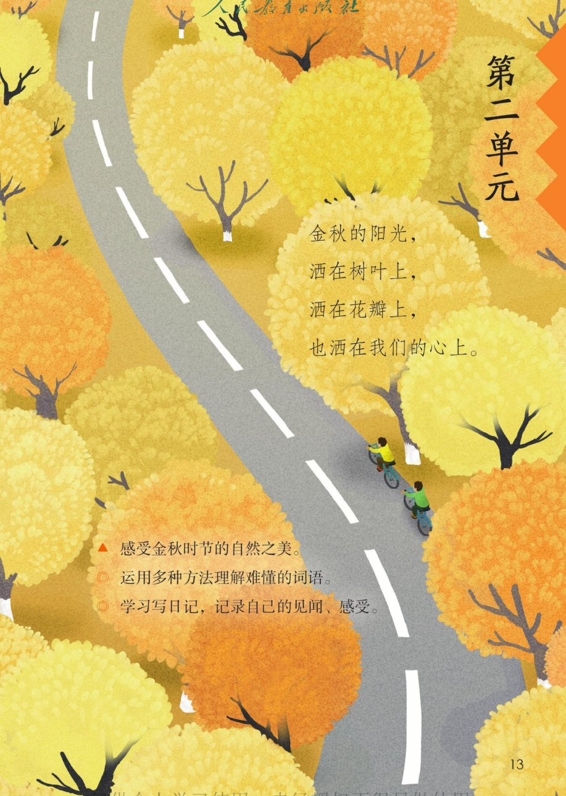
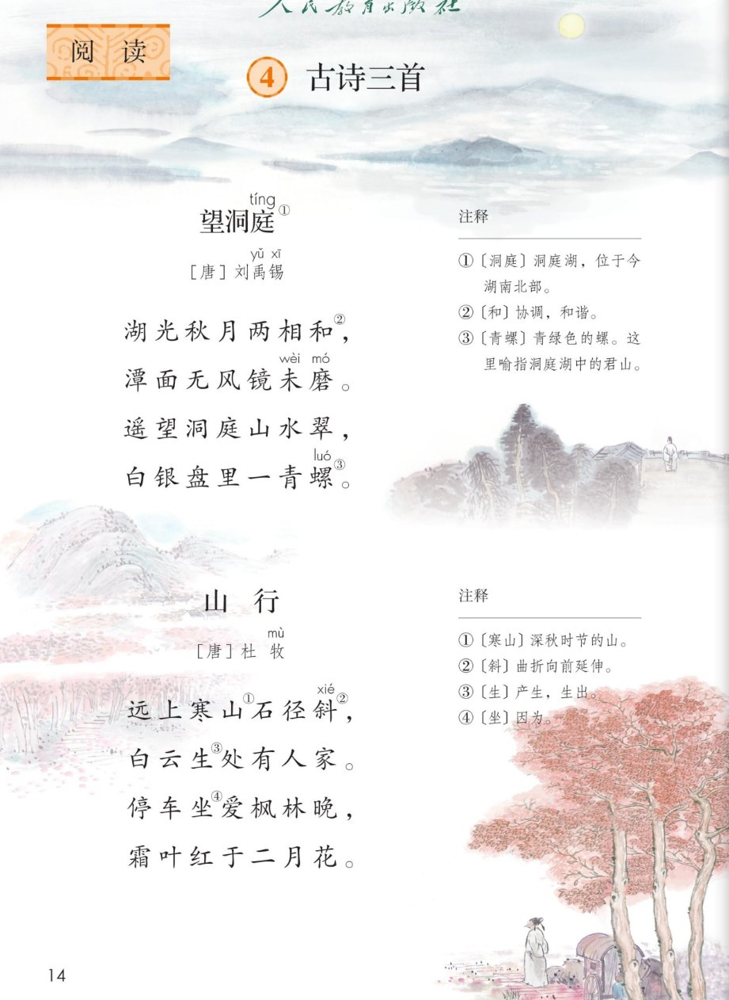
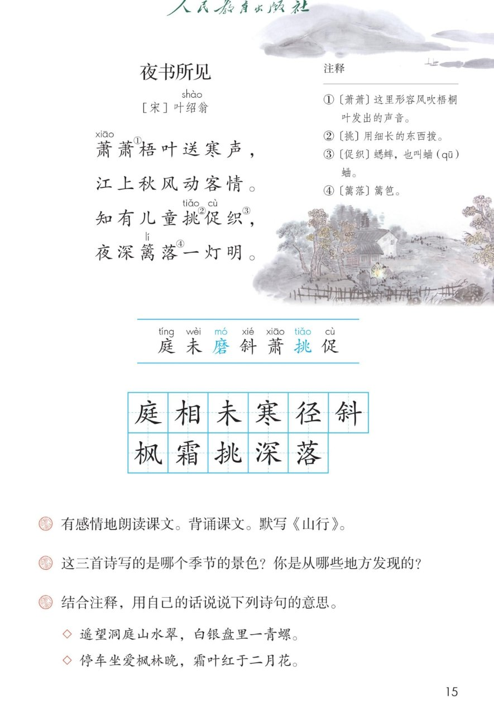

×
🔊 手机听不到声音怎么办？
① 先把手机
媒体音量调大 ，确认没开静音、没连蓝牙耳机；在微信里打开的，点右上角「⋯ → 用浏览器打开」。
② 还是没声音？到应用商店免费下载
Microsoft Edge 浏览器 （它自带朗读发声），用它打开本页面就能出声。
③ 换了 Edge 仍然没声音，说明这部手机的
硬件/系统不支持 网页朗读（多为老旧机型）；近几年买的新手机一般都能正常播放。
→ 打开声音自检
📖 第 4 课《古诗三首》· 有声图文带读
统编版语文 · 第二单元·阅读 · 课本 P14~15 · ［唐］刘禹锡 ［唐］杜牧 ［宋］叶绍翁 · 素养升级版（对标 2022 课标第二学段）
古诗 3 首
素养目标 4
会认字 7
会写字 11
听写词 12
深入理解 8 题
本课本领 多种方法理解难懂的词语
🎧 古诗这样学（可随时点任意一句、一个字、一个词单独听）： ① 听读古诗 ——一句一句读，读到哪一句哪一句发光；再试着自己默读 ，结合注释想诗意。② 学字词 ——7 个会认字、11 个会写字，点一个读一个（注意磨、挑是多音字）。③ 词语·听写 ——听写 12 个词（读两遍→你写→报答案→听示范句），再听 4 组近义词辨析。④ 深入理解 ——8 道题（认知 / 理解 / 运用 / 拓展），先想后看。⑤ 背诵与默写 ——三首诗的秋景按顺序听，再听三位“诗人”诵诗和小老师的背诵窍门。🌟 课后要求（教材原话）：有感情地朗读课文。背诵课文。默写《山行》。
📌 本单元语文要素 ——人文主题：金秋的阳光，洒在树叶上，洒在花瓣上，也洒在我们的心上；阅读：运用多种方法理解难懂的词语 ；习作：学习写日记 。
🀄 文化自信
🀄 文化自信
诵读流传千年的三首古诗，感受古人笔下的秋景，热爱中华优秀传统文化。
🗣 语言运用
🗣 语言运用
认识 7 个生字、会写 11 个字；学习用查字典、看注释、联系上下文等方法理解难懂的词语。
💡 思维能力
💡 思维能力
边读边想象画面，说出三首诗写的季节和从哪里发现的，结合注释用自己的话说诗意。
🎨 审美创造
🎨 审美创造
有感情朗读、背诵，体会古诗的韵律美和金秋时节的自然之美。
点诗前的 ①②③ 听整首
🔁 跟读模式：关
👁 隐藏注音（自测用）
字卡上的拼音标的是本课要认的字，读音来自课本生字表
🎤 朗读要求（老师标准） 磨、挑 是多音字；节奏 ，一句诗中间稍稍停一停；想象画面 ：洞庭月夜、枫林晚景、篱落灯明；径、斜、霜 的写法。
🤫 默读小提示（结合注释默读） 听读 ——点诗句听老师读；第二步 默读 ——不出声、不指读，结合注释想诗意；第三步 朗读背诵 ——读出节奏，背下来。
①
望洞庭 ［唐］刘禹锡
湖光秋月两相和，
潭面无风镜未磨。
遥望洞庭山水翠，
白银盘里一青螺。
📌 这首诗讲：秋夜里，湖光和月色和谐地融在一起，无风的湖面像没有打磨过的铜镜；远远望去，洞庭湖山水苍翠，君山就像白银盘里的一颗小青螺。
②
山行 ［唐］杜牧
远上寒山石径斜，
白云生处有人家。
停车坐爱枫林晚，
霜叶红于二月花。
📌 这首诗讲：深秋时节，石头小路弯弯曲曲地伸向远山，白云升起的地方住着人家；诗人因为喜爱这傍晚的枫林停下了车，经霜的枫叶比二月的春花还要红。
③
夜书所见 ［宋］叶绍翁
萧萧梧叶送寒声，
江上秋风动客情。
知有儿童挑促织，
夜深篱落一灯明。
📌 这首诗讲：萧萧的梧桐叶送来阵阵寒声，江上的秋风牵动了诗人的思乡之情；他知道一定是孩子们在拨弄蟋蟀，因为夜深的篱笆边还亮着一盏灯。
🤔 想一想（点我可跳过）
点一张图，听读整页

第 13 页 · 第二单元导语

第 14 页 · 望洞庭 / 山行

第 15 页 · 夜书所见 / 课后练习
📖 人教版《语文》三年级上册 · 课本第 13~15 页 · 图片仅供个人学习，版权归人民教育出版社所有
理解难懂词语的第一帮手
📝 《望洞庭》注释（P14）
📝 《山行》注释（P14）
📝 《夜书所见》注释（P15）
🔊 课后题 1
🍂 课后题 2
💬 课后题 3
点一个字，听读音、词语和诗句（磨、挑是多音字，注意听）
结构、部首、笔画与书写提示为通用规范，供参考，以教材和老师的指导为准
庭tíng
洞庭
半包围 · 广 · 9画
广字头写得舒展，里面的廷字要托稳，最后一捺要写得有力。
相xiāng
相同
左右 · 木 · 9画
左窄右宽，木字旁的捺变成点，右边的目字横画间距要均匀。
未wèi
未来
独体 · 木 · 5画
上面一横短，下面一横长，竖写在正中，撇捺要舒展。
寒hán
寒山
上下 · 宀 · 12画
宝盖头要盖住下面，中间的三横两竖写紧凑，两点左右对称。
径jìng
石径
左右 · 彳 · 8画
双人旁两撇上短下长，右边的部分写正，左右穿插紧凑。
斜xié
斜阳
左右 · 斗 · 11画
左宽右窄，右边的斗字点要写正，别把最后一点丢掉。
枫fēng
枫叶
左右 · 木 · 8画
木字旁的捺变成点，右边的风字里面是撇加一点，别写错。
霜shuāng
霜叶
上下 · 雨 · 17画
雨字头写得宽而扁，覆盖住下面的相字，下面写紧凑。
挑tiǎo
挑水
左右 · 扌 · 9画
提手旁要写窄，右边的兆字撇和点要舒展，左右平衡。
深shēn
深秋
左右 · 氵 · 11画
三点水呈弧形排列，右边上面是穴字头变体，整体左窄右宽。
落luò
落叶
上下 · 艹 · 12画
草字头写得扁，下面的洛字各部分收紧，三点水不要写成小横。
点一行，听读这一组词语
庭 洞庭 庭院 家庭
寒 寒山 寒冷 寒风
深 深秋 深夜 加深
落 落叶 篱落 降落
读两遍 → 你在纸上写 → 报答案 → 听示范句
准备听写 · 共 12 个词
○ ○ ○
点下面的「开始听写」，听到一个词就写一个词。
▶ 开始听写
🔁 再读一遍
👁 看答案
点词听读，点句子听示范句，再自己说一句
1 洞庭 课文词
示范句：遥望洞庭山水翠，写的是洞庭湖。
✏️ 我也能说：洞庭是湖名，注意庭是广字头。
2 相同 课文词
示范句：湖光和秋月的颜色相同。
✏️ 我也能说：谁和谁相同。
3 未来 课文词
示范句：未来的一天，我想去看看洞庭湖。
✏️ 我也能说：谁的未来怎么样。
4 寒山 课文词
示范句：远上寒山石径斜。
✏️ 我也能说：谁上寒山。
5 石径 课文词
示范句：弯弯的石径伸向远方。
✏️ 我也能说：什么石径怎么样。
6 斜阳 课文词
示范句：斜阳照在枫林上。
✏️ 我也能说：斜阳照在哪里。
7 枫叶 课文词
示范句：枫叶红了，像一枚枚小手掌。
✏️ 我也能说：枫叶像什么。
8 霜叶 课文词
示范句：霜叶红于二月花。
✏️ 我也能说：霜叶比什么还红。
9 挑水 课文词
示范句：哥哥帮爷爷挑水。
✏️ 我也能说：谁帮谁挑水。
10 深秋 课文词
示范句：深秋时节，天气渐渐凉了。
✏️ 我也能说：什么时节天气怎么样。
11 落叶 课文词
示范句：落叶在风中打转。
✏️ 我也能说：落叶在做什么。
12 秋风 课文词
示范句：江上秋风动客情。
✏️ 我也能说：秋风怎么了。
相同点 / 不一样在哪 / 各造一句
望 — 看
相同：都表示用眼睛看。
不一样：望 偏重向远处看；看 是一般的看，远近都行。
望：遥望洞庭山水翠。
寒 — 冷
相同：都表示温度低。
不一样：寒 是书面语，常组词：寒山、寒风；冷 更口语。
寒：远上寒山石径斜。
明 — 亮
相同：都表示光线充足。
不一样：明 常与其他字组词：明亮、灯明；亮 偏重发光。
明：夜深篱落一灯明。
送 — 递
相同：都可以表示把东西交给别人。
不一样：送 还可以表示赠送、传送；递 强调经由手交过去。
送：萧萧梧叶送寒声。
写秋天的诗 《望洞庭》《山行》《夜书所见》都写了秋天
比喻句 白银盘里一青螺——湖水像白银盘，君山像小青螺
对比句 霜叶红于二月花——秋天的枫叶比春天的花还红
秋景词语 金秋 秋风 寒声 霜叶 落叶
点一张卡，听一种方法
古诗里有不少难懂的词语，别怕——查字典、看注释、联系上下文、看插图 ，四样法宝轮着用。下面就用三首诗来试一试。
🔤 方法一·查字典
“磨”是多音字：磨刀的磨读第二声，磨盘的磨读第四声。“镜未磨”指把铜镜磨光亮。
📖 方法二·结合注释
注释是理解古诗的第一帮手——“坐”是“因为”，“篱落”是“篱笆”。
🔗 方法三·联系上下文
“萧萧梧叶送寒声”的“寒”，联系“秋风动客情”就知道是深秋的凉意。
🖼 方法四·看插图想象
看课本插图上弯弯的石径、红红的枫林，“石径斜”就好懂了。
💎 新鲜句式·比喻
白银盘里一青螺——湖水像白银盘，君山像一颗小青螺，多美呀。
🔥 新鲜句式·对比
霜叶红于二月花——秋天的枫叶，比春天的花还要红。
✏️ 圈画交流
把你觉得新鲜的诗句画下来，说说诗人把秋天写成了什么样子。🌈 答案不唯一。
标「答案不唯一」的题，说得有道理都对
认知 这三首诗分别是哪位诗人在哪个朝代写的？看解析
🤔 想一想
解析：
《望洞庭》是唐代刘禹锡写的，《山行》是唐代杜牧写的，《夜书所见》是宋代叶绍翁写的。
🌈 答案不唯一，说得有道理都对
认知 注释里说“青螺”指什么？“坐”是什么意思？看解析
🤔 想一想
解析：
青螺指青绿色的螺，诗里喻指洞庭湖中的君山；坐是“因为”的意思——停车坐爱枫林晚，就是因为喜爱枫林才停车。
🌈 答案不唯一，说得有道理都对
理解 这三首诗写的是哪个季节的景色？你是从哪些地方发现的？（课后题2）看解析
🤔 想一想
解析：
都是秋天。从秋月、寒山、霜叶、秋风、梧叶送寒声、挑促织这些词语发现的。🌈 答案不唯一，找到诗里的证据就行。
🌈 答案不唯一，说得有道理都对
理解 “遥望洞庭山水翠，白银盘里一青螺”把什么比作什么？看解析
🤔 想一想
解析：
把月光下的洞庭湖面比作白银盘，把苍翠的君山比作一颗小小的青螺——又亮又圆又可爱。
🌈 答案不唯一，说得有道理都对
理解 “知有儿童挑促织，夜深篱落一灯明”，诗人从篱笆边的灯火想到了什么？看解析
🤔 想一想
解析：
他猜想一定是孩子们在拨弄蟋蟀；由眼前的景象想起自己的童年，更添了思念家乡的心情。
🌈 答案不唯一，说得有道理都对
运用 结合注释，用自己的话说说“停车坐爱枫林晚，霜叶红于二月花”的意思。（课后题3）看解析
🤔 想一想
解析：
因为喜爱这傍晚的枫林，我停下了车；经霜的枫叶，比二月的春花还要红。
🌈 答案不唯一，说得有道理都对
运用 背诵三首古诗，再默写《山行》，注意“径、斜、霜”的写法。（课后题1）看解析
🤔 想一想
解析：
默写口诀：石径的径是双人旁，斜的右边是斗，霜上面是雨字头。默完对照课本检查一遍。
🌈 答案不唯一，说得有道理都对
拓展 你还读过哪些写秋天的诗或句子？和同学交流。看解析
🤔 想一想
解析：
比如《秋夕》《秋风引》等。🌈 答案不唯一，说出诗名和你喜欢的句子就很好。
🌈 答案不唯一，说得有道理都对
💬 背诵支架：先 记住每首诗写的景 → 再 一句一句连起来背 → 最后 默写《山行》，检查径、斜、霜。
点一位诗人，听他诵诗（朗读稿为诗文原句）
🎭 刘禹锡
湖光秋月两相和，潭面无风镜未磨。遥望洞庭山水翠，白银盘里一青螺。
🎭 杜牧
远上寒山石径斜，白云生处有人家。停车坐爱枫林晚，霜叶红于二月花。
🎭 叶绍翁
萧萧梧叶送寒声，江上秋风动客情。知有儿童挑促织，夜深篱落一灯明。
🎭 小老师
背诵小窍门：先记住每首诗写了什么景——望洞庭写湖和月，山行写山和枫林，夜书所见写梧叶和灯火；再一句一句连起来背。默写《山行》时注意径、斜、霜。
🎭 旁白
三首诗写的都是秋天：一个在洞庭湖上看月，一个在枫林里停车，一个在秋夜里听梧叶声。古诗要读出节奏，一句诗在中间稍稍停一停。
每题给自己打 1~3 颗星
1. 我能正确认读本课 7 个会认字（分清磨、挑的读音）。 ☆ ☆ ☆
2. 我能背诵三首古诗，并默写《山行》。 ☆ ☆ ☆
3. 我能用查字典、看注释等方法理解难懂的词语。 ☆ ☆ ☆
4. 我能结合注释，用自己的话说出诗句的意思。 ☆ ☆ ☆
5. 我能边读边想象画面，读出古诗的节奏。 ☆ ☆ ☆
✍️ 小练笔 ：日记的格式 （日期、星期、天气）写一两句你看到的秋景 ，把古诗里学到的词用上。例 ：11 月 3 日 星期二 晴——今天放学路上，我看见枫叶 红了，像一枚枚小手掌。时间、地点、看到的景色 ，两三句话就行。